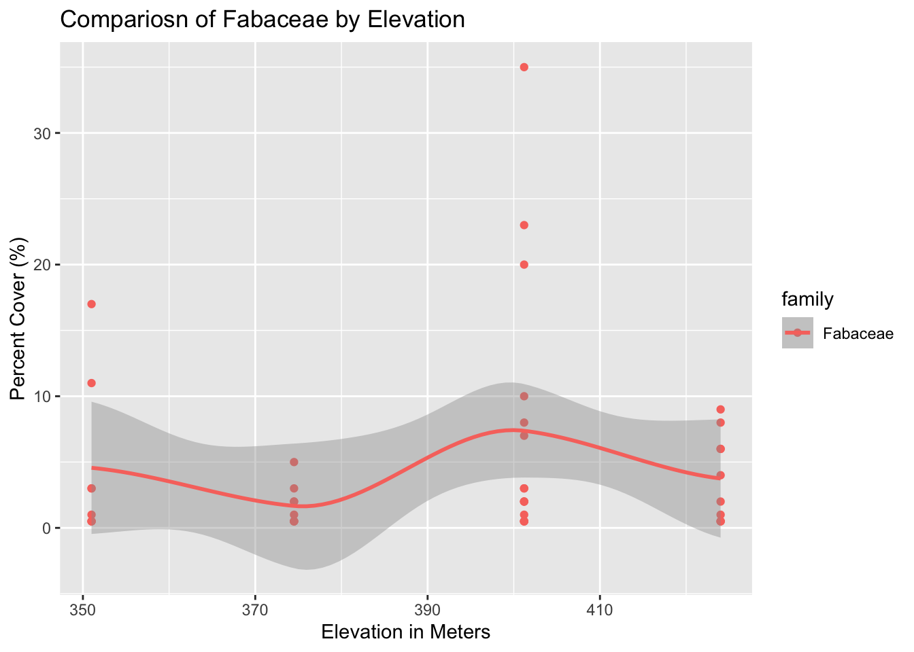

This analysis will look at vegetaion data from the konza National Ecological Observatory Network (NOEN) site located near Manhattan, KS. It will use tidyverse packages to wrangle and visualize some of the data.
Loading the data
The data are provided in csv files. We’ll use the tidyverse package ‘readr’ to open into R.
# load packageslibrary("readr")library("dplyr")
Attaching package: 'dplyr'
The following objects are masked from 'package:stats':
filter, lag
The following objects are masked from 'package:base':
intersect, setdiff, setequal, union
library("ggplot2")# read in the datakonza_data <-read_csv("data/NEON.D06.KONZ.DP1.10058.001.div_1m2Data.2025-08.basic.20251222T234053Z.csv")
Rows: 468 Columns: 42
── Column specification ────────────────────────────────────────────────────────
Delimiter: ","
chr (26): uid, namedLocation, domainID, siteID, geodeticDatum, plotType, nl...
dbl (7): decimalLatitude, decimalLongitude, coordinateUncertainty, elevati...
lgl (8): identificationQualifier, taxonIDRemarks, morphospeciesID, morphos...
date (1): endDate
ℹ Use `spec()` to retrieve the full column specification for this data.
ℹ Specify the column types or set `show_col_types = FALSE` to quiet this message.
Data summarizing with dplyr
We’ll next use the dplyr package to summarize some different apsects of the data.
# first summary to make will be a count of the number of observations in # each familykonza_data %>%group_by(family) %>%tally() %>%arrange(desc(n))
This analysis showed that Poaceae and Asteraceae are among the most common family found in these plots.
# The goal is to calculate the mean percent cover of each family konza_data %>%group_by(family) %>%summarise(mean_pcnt_cover =mean(percentCover),sd_pcnt_cover =sd(percentCover)) %>%arrange(desc(mean_pcnt_cover))
This analysis showed that the largest percent cover is the NA taxa, which means it likely wasn’t able to be identified, but the highest mean percent cover is at 16% across the plots was Fagaceae.
# The goal is to calculate the mean percent cover of each family konza_data %>%filter(elevation>390) %>%group_by(family) %>%summarise(mean_pcnt_cover =mean(percentCover),sd_pcnt_cover =sd(percentCover)) %>%arrange(desc(mean_pcnt_cover))
Next we’ll learn to use mutate(), which is a function to create a new column based on contents form an existing column.
# select pulls out the columns you want# mutate creates a mew column with whatever content you want# which can include manipulation of an existing columnkonza_data %>%select(scientificName, family, percentCover) %>%mutate(propCover = percentCover /100)
The following plot shows how the percent cover of Poaceae changes, or doesn’t change, with elevation differences. This is visualized to see how elevation impacts the presence of Poaceae.
This shows that elevation does not significantly impact the presence of Poaceae.
Next, we will visualize the percent cover of Fabaceae by elevtion. This is to analyze how elevation impacts the prevelence of Fabacea through a smooth best- fit line on a point graph.
Warning in simpleLoess(y, x, w, span, degree = degree, parametric = parametric,
: reciprocal condition number 7.7795e-17
Warning in simpleLoess(y, x, w, span, degree = degree, parametric = parametric,
: There are other near singularities as well. 2486.5
Warning in predLoess(object$y, object$x, newx = if (is.null(newdata)) object$x
else if (is.data.frame(newdata))
as.matrix(model.frame(delete.response(terms(object)), : pseudoinverse used at
350.63
Warning in predLoess(object$y, object$x, newx = if (is.null(newdata)) object$x
else if (is.data.frame(newdata))
as.matrix(model.frame(delete.response(terms(object)), : neighborhood radius
50.565
Warning in predLoess(object$y, object$x, newx = if (is.null(newdata)) object$x
else if (is.data.frame(newdata))
as.matrix(model.frame(delete.response(terms(object)), : reciprocal condition
number 7.7795e-17
Warning in predLoess(object$y, object$x, newx = if (is.null(newdata)) object$x
else if (is.data.frame(newdata))
as.matrix(model.frame(delete.response(terms(object)), : There are other near
singularities as well. 2486.5

This shows that Fabacea is most prevelent at elevations around 400m.
Next, we will visualize family elevation vs. percent cover in a point graph. This is to create an easily readable color coded graph to see which families are more prevelent at different elevations.
After filtering out the NA families, which was a majority of high percent covers, we can clearly see that most families are under 25% cover in most samples.